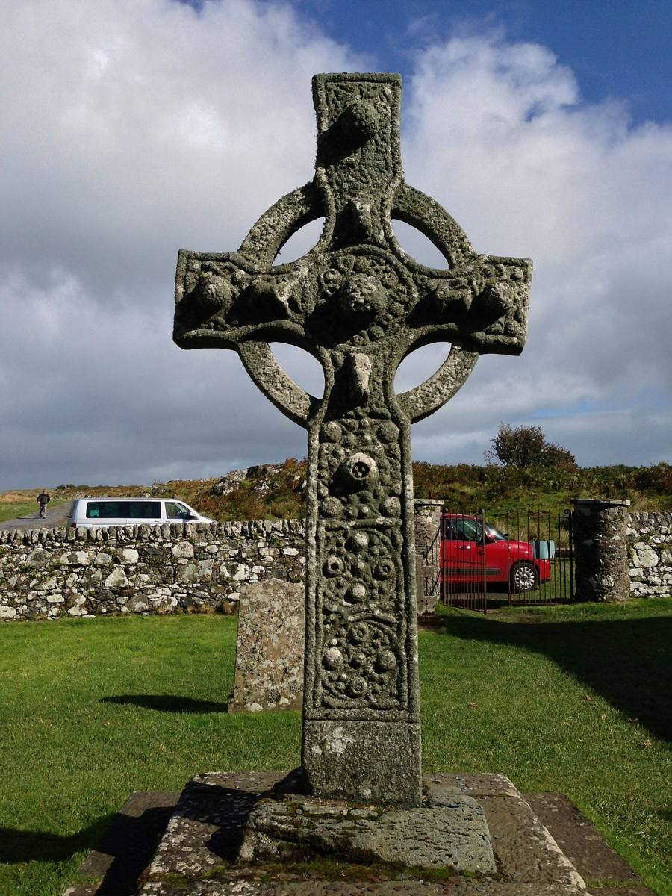
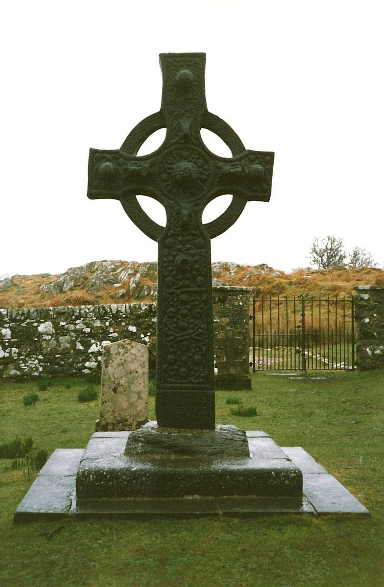
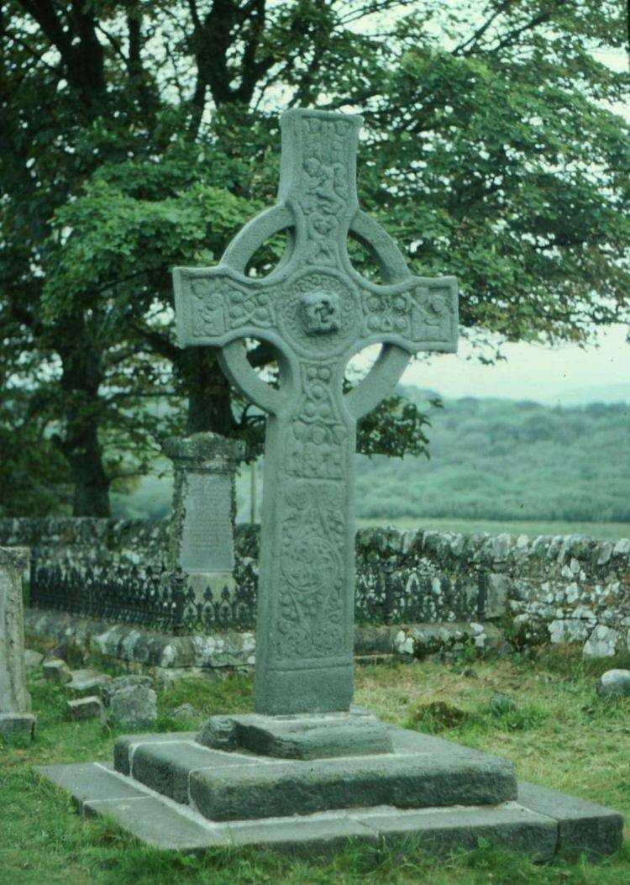

A tall stone cross carved in the second half of the 700s, still standing where it was put up more than 1,200 years ago. Historic Environment Scotland calls it one of the finest carved stones of medieval Scotland.
It stands in the churchyard of the roofless old parish church of Kildalton, a few miles past Ardbeg at the end of a single-track road through the woods.
The carving is closely related to the great crosses of Iona. Look for the Virgin and Child, a scene very like the one in the Book of Kells. It's one of very few early Christian crosses in Scotland still in its original place.
Historic Environment Scotland →What it looks like



Photographs from Wikimedia Commons: Euan Nelson, CC BY-SA 2.0; sebastian.b., CC BY 2.0; S. Rae from Scotland, UK, CC BY 2.0; Russel Wills, CC BY-SA 2.0. Prices are 2026 figures in pounds, with rand at £1 = R22.19. Check before booking.